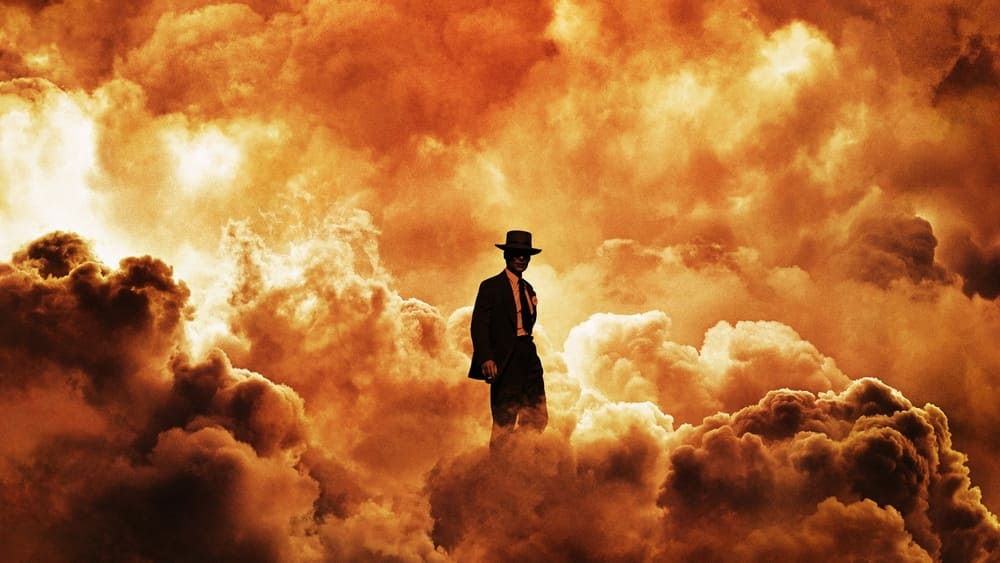

-
Top 10 Films of 2023
by Mitchel Green - January 4, 2024
|
mitchelgreen34@gmail.com

source: The Movie Database
As summer approached, 2023 (like most years) was shaping up to be a bad year for movies. International releases from the previous year finally made their way to my local theaters, and the occasional noteworthy small independent film (shoutout Kyle Edward Ball’s terrifying “Skinamarink,” which did not make my list) buoyed the early month slop that Hollywood churns out. The buzz out of Cannes seemed lukewarm at best, though a few new films were getting major hype (some of which you’ll see on the list). The release calendar for the back half of the year was still a mystery, but what we did know of didn’t look all that appealing. Still, as is often the case, by December, the year gave us many exciting and daring projects. 2023 is one of the best years for film in recent memory, and here are my top 10 features from the last year:
*NOTE: Some noteworthy releases have yet to make their way to theaters near me. Much as I’m sure I’ll love something like Jonathan Glazer’s “The Zone of Interest,” I have not had the chance to see it yet. Blame the distributors.
10. Poor Things (dir. Yorgos Lanthimos)
Yorgos Lanthimos’s delightful “Frankenstein” riff is a bizarre, hilarious coming-of-age story with a lot on its mind. It’s about how viewing the world through fresh eyes can help us push back on (and break out of) oppressive societal models. It’s about paternal and marital control and how that impacts those with and without power in the relationship. It’s about finding beauty in the weirdness of what humans create and the human body itself. Maybe it’s too overstuffed for its own good, but the constant bouncing between ideas reflects how Bella sees the world. When she gets bored or when something has served its purpose to her, she moves on. There’s no need to dwell on any one thing when the world has so much to offer.
9. How to Blow Up a Pipeline (dir. Daniel Goldhaber)
It’s not subtle, it’s not complex, and it doesn’t need to be. Daniel Goldhaber’s “How to Blow Up a Pipeline” is a desperate thriller whose message is less “commit eco-terrorism” and more “won’t somebody do something?”. In that sense, it’s right there with Paul Schrader’s “First Reformed” as a critical text on the social effects of climate change and the shocking lack of urgency that institutions with the power to make an impact have shown for decades. Of course, none of it would work if it wasn’t one of the most viscerally intense films of this year. Rhetoric will only take you so far.
8. Spider-Man: Across the Spider-Verse (dir. Joaquim Dos Santos, Justin K. Thompson, Kemp Powers)
2023 may go down in history as the year the superhero movie died. It may also have produced one of the best films of its kind. Neither of these is all that surprising when you consider what “Spider-Man: Across the Spider-Verse” does that other Marvel and DC releases don’t: it feels like it’s pushing the medium forward. Complain all you want about the weirdly paced half-narrative, but when a film gives you as much visual and sonic splendor as this one does — especially in a genre that is in dire need of not only technical competence but actual achievement — you’ll take the trade-off every time.
7. Killers of the Flower Moon (dir. Martin Scorsese)
Martin Scorsese has been making films about the evil at the heart of American culture for 50 years now, but he’s also been interested in whether or not redemption is possible. Is there still hope for a nation that continually lets morally abhorrent people get away with what they do? It’s doubtful Scorsese is finished answering this question, but if his late-period work indicates what answer he is trending toward, it’s a resounding no. Like Mollie and the rest of the Osage Nation, the people who suffer at the hands of the great American evil, greed, won’t be helped until someone in a position of power can get something out of it. The FBI only comes in after the damage to the Osage is done, cleaning up and taking credit so that J. Edgar Hoover can grow the power of his new institution. In the final scene, Scorsese turns the camera back on himself. By making entertainment and profiting off of the stories of those who knowingly and unremorsefully destroy the lives of primarily marginalized people, is he any better than his subjects? It’s an open-ended, self-reflective reckoning that only a true master of the form could pull off.
6. The Taste of Things (dir. Tran Anh Hung)
Many of my favorite films this year dealt with creation, with either art being the actual subject (see #2) or something else one could read as a metaphor for the creation of art (see #4 and #1). “The Taste of Things” takes this second approach — though I guess some would argue cooking is an art — using food as a means for the characters to express themselves to others. The sensual way Tran Anh Hung shoots the food preparation sets us up for the romantic plot to follow, as well as allows us to understand the relationship between Eugénie and Dodin, how they complement each other, and what they can bring out of each other that no one else can. “The Taste of Things” is more than just food porn. It’s about how art can connect us and how what we create reveals ourselves to those who choose to see it.
5. Priscilla (dir. Sofia Coppola)
It’s tough not to compare Sofia Coppola’s magnificent “Priscilla” with Baz Luhrmann’s terrible “Elvis” from last year, even though the films have different themes and approaches, and the only bridge between the two is the presence of Elvis Presley. It’s not so much that Coppola’s film is more subtle or less stylized than Luhrmann’s, but she is far more interested in the complexities of her subjects. Coppola focuses on Pricilla’s dissatisfaction with the way her life turned out. She got everything except someone who loved and cared about her. Of course, we know that was never going to come from someone who groomed her, but the film doesn’t paint Elvis as a cartoonishly evil person. Through her use of music and intimate compositions, we understand why Priscilla would fall for someone who is not exactly hiding the fact that he’s taking advantage of her.
4. BlackBerry (dir. Matt Johnson)
2023 was the year of the product movie. When intellectual property has been king for long enough, you run out of new IP to use. Many producers have turned to the stories of products — Air Jordan sneakers, Flamin’ Hot Cheetos, Tetris — to get people in seats via things they recognize. Although films like “Barbie” try to subvert their nature as products built for consumption, the element that these kinds of films need to work is cynicism. “BlackBerry” has cynicism in abundance. Sure, the product these people made and sold was revolutionary, and Matt Johnson admires the engineers who made it happen. But eventually, greed and hubris are the driving forces of business and not innovation and discovery. Infinite growth is an idea that can only lead to collapse. It’s a warning powerful people should take seriously but never will.
3. Fallen Leaves (dir. Aki Kaurismäki)
The mainstream romantic-comedy died when most of them got pushed to streaming. Even the ones that have trickled into theaters over the last couple of years, like “No Hard Feelings” and “Ticket to Paradise,” have been dire retreads of tropes that haven’t worked in decades. Thankfully, the genre is not dead. It just needs to subvert the overly sentimental formula that makes these films comfortable rather than invigorating. That isn’t to say Aki Kaurismäki’s “Fallen Leaves” isn’t sentimental or even eventually comforting, but it does these things from a different angle. Deep pain is at the heart of “Fallen Leaves,” which doesn’t seem to exist in most rom-coms. The deadpan, closed-off sadness that exists within every character is something we desperately want to see them break out of. When the seal finally breaks, the happy ending is far more rewarding. It’s telling that the films “Fallen Leaves” uses as influences aren’t the ‘90s and ‘00s rom-coms that loom over most modern Hollywood entries in the genre. It’s the classic work of Charlie Chaplin. The characters don’t need to express love in grand monologues. They barely speak in the film. Love is shown through simple looks. From the first time Ansa and Holappa’s eyes meet, we can tell that they’re falling in love. Much of the film takes place with the two apart, but it works because of that look.
2. Asteroid City (dir. Wes Anderson)
“Asteroid City” is a masterpiece that gets richer with every viewing. It’s a testament to Wes Anderson’s varied and accomplished career that it might not even crack the top 3 in his filmography. No other American filmmaker is as unapologetically distancing as Anderson. The deeper he shoves the emotions below the surface, the more polarizing his films become and the more thrilling they are when they finally open up to you. “Asteroid City” might be Anderson’s toughest film to crack open yet, but when Jason Schwartzman’s actor character leaves the play to find the meaning in what he’s doing and assurance that he’s doing it right, only to find that there isn’t meaning. There aren’t always answers, but you have to keep going anyway. Returning to the film with the context of the final few scenes in mind allows you to view it without desperately searching for meaning and let its beauty wash over you. Trust the artist. His pictures always come out.
1. Oppenheimer (dir. Christopher Nolan)
After “Tenet,” I thought Christopher Nolan might be going backward, abandoning technical ambition and retreading themes and structures we had seen from him before while dispensing with emotional power once and for all. I was wrong. “Oppenheimer” is overwhelmingly dense, produced with a bravado only matched by James Cameron, and remains as propulsive and entertaining as any action movie Nolan has made. More than any other big-budget Hollywood release in 2023, “Oppenheimer” wants to make you feel. You feel elated during montages of Oppenheimer studying the mysteries of the universe and modern art. During the Trinity test sequence, you’re awed by the engineering feat of building the bomb and Nolan’s ability to capture it on screen. You also feel horror at the destructive capabilities something of this magnitude has. In the end, you feel hopeless. The cost of human life does not matter to people vying for power. It’s a bleak movie for bleak times.